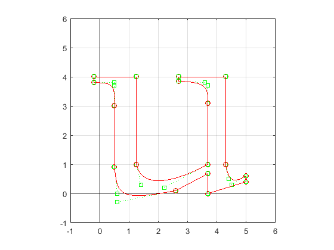

plot([-1 6],[0 0],'k',[0 0],[-1 6],'k');
hold on
x=[-.2 -.2 1.25 1.25;
1.25 1.25 1.25 1.25;
1.25 1.4 2.2 3.7;
3.7 3.7 3.7 3.7;
3.7 3.7 3.6 2.7;
2.7 2.7 2.7 2.7;
2.7 2.7 4.3 4.3;
4.3 4.3 4.3 4.3;
4.3 4.4 4.5 5;
5 5 5 5;
5 5 3.7 3.7;
3.7 3.7 3.7 3.7;
3.7 3.7 2.6 2.6;
2.6 .6 .6 .5;
.5 .5 .5 .5;
.5 .5 .5 -.2;
-.2 -.2 -.2 -.2];
y=[4 4 4 4;
4 4 1 1;
1 .3 .2 1;
1 1 3.1 3.1;
3.1 3.7 3.8 3.85;
3.85 3.85 4 4;
4 4 4 4;
4 4 1 1;
1 .5 .3 .6;
.6 .6 .4 .4;
.4 .4 0 0;
0 0 .68 .68;
.68 .68 .1 .1;
.1 -.3 0 .9;
.9 .9 3 3;
3 3.7 3.8 3.8;
3.8 3.8 4 4];
numcurves=size(x,1);
t=0:.002:1;
for i=1:numcurves
plot(x(i,1),y(i,1),'ro',x(i,4),y(i,4),'ro')
plot([x(i,1),x(i,2)],[y(i,1),y(i,2)],'g:')
plot([x(i,3),x(i,4)],[y(i,3),y(i,4)],'g:')
plot(x(i,2),y(i,2),'gs',x(i,3),y(i,3),'gs')
bx=3*(x(i,2)-x(i,1));by=3*(y(i,2)-y(i,1));
cx=3*(x(i,3)-x(i,2))-bx; cy=3*(y(i,3)-y(i,2))-by;
dx=x(i,4)-x(i,1)-bx-cx; dy=y(i,4)-y(i,1)-by-cy;
xp=x(i,1)+bx*t+cx*t.*t+dx*t.^3;
yp=y(i,1)+by*t+cy*t.*t+dy*t.^3;
plot(xp,yp,'r')
end
axis square
grid
hold off
